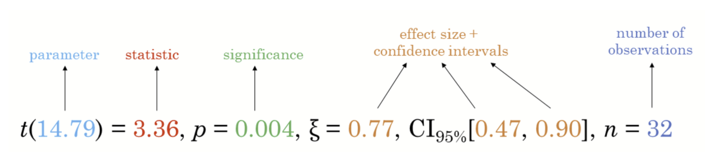
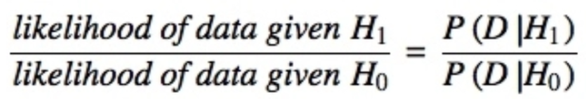
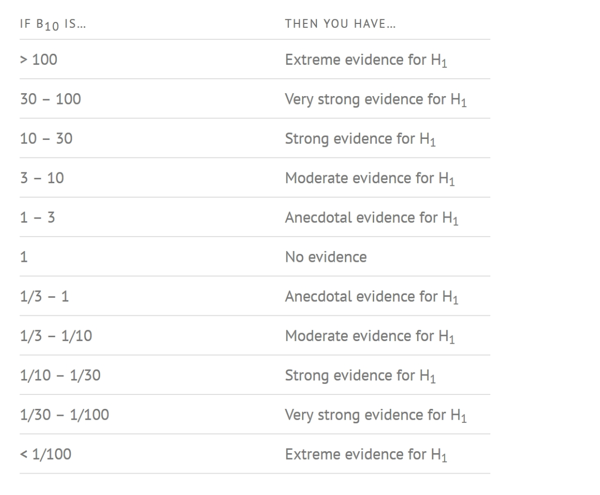
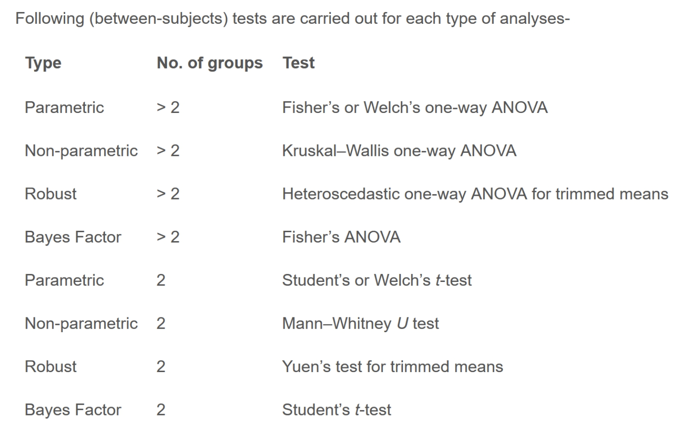
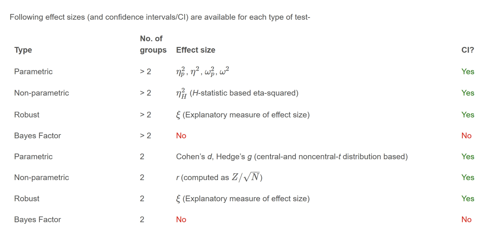
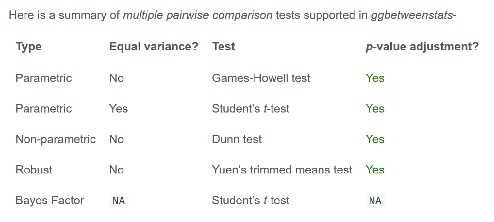
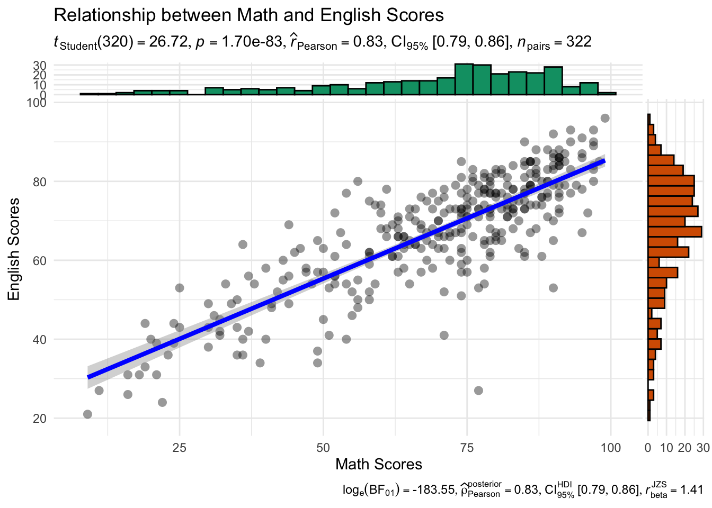
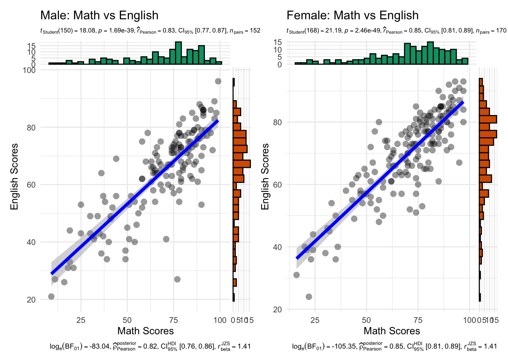

pacman::p_load(ggstatsplot, tidyverse)Hands-on Exercise 4.2: Visual Statistical Analysis
1. Learning Outcome
This hands-on exercise provides practical experience in using the following R packages:
ggstatsplot: To create visually rich statistical graphics.performance: To visualize model diagnostics and assess model performance.parameters: To visualize model parameters and their uncertainties.
2. Visual Statistical Analysis with ggstatsplot
ggstatsplot is an extension package for ggplot2 that specializes in creating information-rich plots that incorporate statistical test details directly within the visualization. It offers 2 key functionalities:
Alternative Statistical Methods: By default,
ggstatsplotprovides alternative statistical inference methods compared to baseggplot2.Best Practices in Reporting: The package adheres to the APA (American Psychological Association) style guide, considered a gold standard for statistical reporting. This ensures plots generated by
ggstatsplotfollow best practices in presenting statistical test results.

3. Getting Started
3.1. Installing and launching R packages
The below code chunk loads ggstatsplot and tidyverse into R environment.
3.2. Importing data
A dataset named Exam_data is used in this section. It contains year-end examination scores for a cohort of Primary 3 students from a local school and is stored in CSV format.
The read_csv() function from the readr package, part of the tidyverse, is applied to import the file:
exam <- read_csv("data/Exam_data.csv", show_col_types = FALSE)üìã Preview of the data:
| ID | CLASS | GENDER | RACE | ENGLISH | MATHS | SCIENCE |
|---|---|---|---|---|---|---|
| Student321 | 3I | Male | Malay | 21 | 9 | 15 |
| Student305 | 3I | Female | Malay | 24 | 22 | 16 |
| Student289 | 3H | Male | Chinese | 26 | 16 | 16 |
| Student227 | 3F | Male | Chinese | 27 | 77 | 31 |
| Student318 | 3I | Male | Malay | 27 | 11 | 25 |
| Student306 | 3I | Female | Malay | 31 | 16 | 16 |
3.3. One-sample test: gghistostats() method
The code chunk below uses gghistostats() to build a visual of one-sample test on English scores.
set.seed(1234)
gghistostats(
data = exam,
x = ENGLISH,
type = "bayes",
test.value = 60,
xlab = "English scores"
)
Default information from above graph:
Statistical details
Bayes Factor
Sample sizes
Distribution summary
3.4. Unpacking the Bayes Factor
The Bayes factor is a crucial concept in Bayesian statistics. It quantifies the strength of evidence in favor of one hypothesis (H1, the alternative hypothesis) compared to another (H0, the null hypothesis). This ratio allows for the evaluation of data in the context of both the null hypothesis and prior beliefs or external information. When comparing H1 and H0, the Bayes factor is typically denoted as B10 and defined mathematically as.

The Schwarz criterion provides a relatively straightforward method for approximating the Bayes factor.
3.5. How to interpret Bayes Factor
A Bayes Factor can be any positive number. One of the most common interpretations first proposed by Harold Jeffereys (1961) and slightly modified by Lee and Wagenmakers in 2013.

3.6. Two-sample mean test: ggbetweenstats()
The code chunk below use ggbetweenstats() to build a visual for two-sample mean test of Maths scores by gender.
ggbetweenstats(
data = exam,
x = GENDER,
y = MATHS,
type = "np",
messages = FALSE
)
Default information: statistical details, Bayes Factor, sample sizes, distribution summary
3.7. Oneway ANOVA Test: ggbetweenstats() method
The code chunk below uses ggbetweenstats() to build a visual for One-way ANOVA test on English score by race.
ggbetweenstats(
data = exam,
x = RACE,
y = ENGLISH,
type = "p",
mean.ci = TRUE,
pairwise.comparisons = TRUE,
pairwise.display = "s",
p.adjust.method = "fdr",
messages = FALSE
)
“ns” → only non-significant
“s” → only significant
“all” → everything
3.7.1. ggbetweenstats - Summary of tests



3.8. Significant Test of Correlation: ggscatterstats()
The code chunk below uses ggscatterstats() to build a visual for Significant Test of Correlation between Maths scores and English scores.
ggscatterstats(
data = exam,
x = MATHS,
y = ENGLISH,
marginal = FALSE,
)
3.9. Significant Test of Association (Depedence) : ggbarstats() methods
The code chunk below bins the Maths scores into a 4-class variable using cut().
exam1 <- exam %>%
mutate(MATHS_bins =
cut(MATHS,
breaks = c(0,60,75,85,100))
)Next we use ggbarstats() to build a visual for Significant Test of Association.
ggbarstats(exam1,
x = MATHS_bins,
y = GENDER)
Practice: Scatterplot with marginal distributions
ggscatterstats(
data = exam,
x = MATHS,
y = ENGLISH,
marginal = TRUE,
xlab = "Math Scores",
ylab = "English Scores",
title = "Relationship between Math and English Scores",
results.subtitle = TRUE,
type = "parametric",
bf.message = TRUE,
label.expression = MATHS > 85 & ENGLISH > 85,
centrality.para = "mean",
ggtheme = ggplot2::theme_minimal()
)

library(patchwork)
base_theme <- theme_minimal(base_size = 10) +
theme(
plot.subtitle = element_text(size = 6.3),
plot.caption = element_text(size = 7)
)
p_male <- ggscatterstats(
data = subset(exam, GENDER == "Male"),
x = MATHS,
y = ENGLISH,
marginal = TRUE,
xlab = "Math Scores",
ylab = "English Scores",
title = "Male: Math vs English",
results.subtitle = TRUE,
type = "parametric",
bf.message = TRUE,
label.expression = MATHS > 85 & ENGLISH > 85,
centrality.para = "mean",
ggtheme = base_theme
)
p_female <- ggscatterstats(
data = subset(exam, GENDER == "Female"),
x = MATHS,
y = ENGLISH,
marginal = TRUE,
xlab = "Math Scores",
ylab = "English Scores",
title = "Female: Math vs English",
results.subtitle = TRUE,
type = "parametric",
bf.message = TRUE,
label.expression = MATHS > 85 & ENGLISH > 85,
centrality.para = "mean",
ggtheme = base_theme
)
p_male + p_female + plot_layout(guides = "collect")